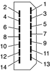

The video monitor connector is a 14-pin rectangular connector, Hosiden TCX3143. The signal assignments are shown in Figure 3-10 and Table 3-11.
Figure 3-10 Video monitor connector
The cable detect function on pin 13 is implemented by connecting pin 13 to ground in the monitor cable.
The video monitor connector is compliant with the VESA specification (DDC version 3).
An adapter is available for use with monitors with VGA 15-pin miniature D-type connectors.